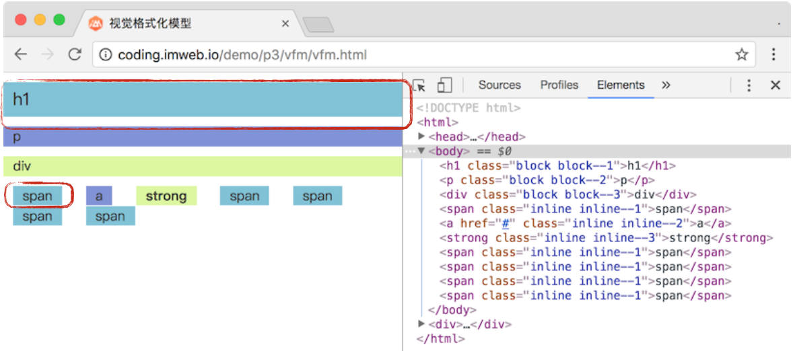
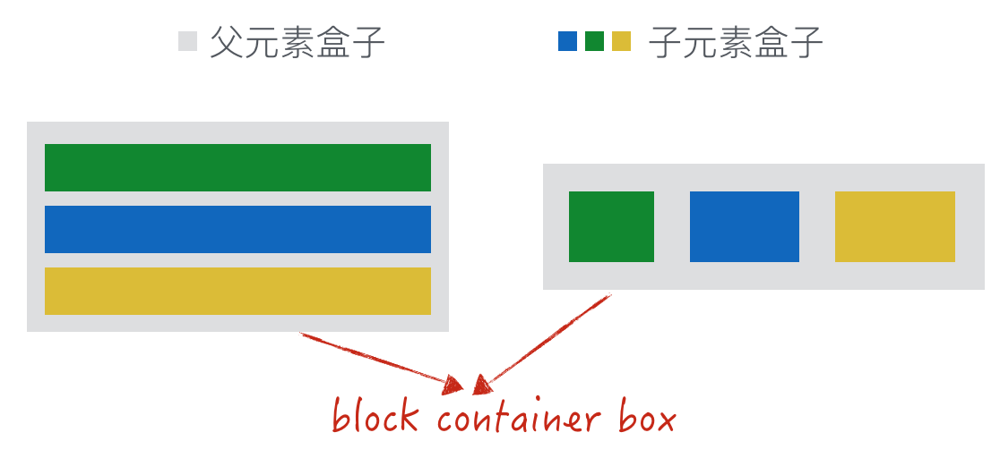
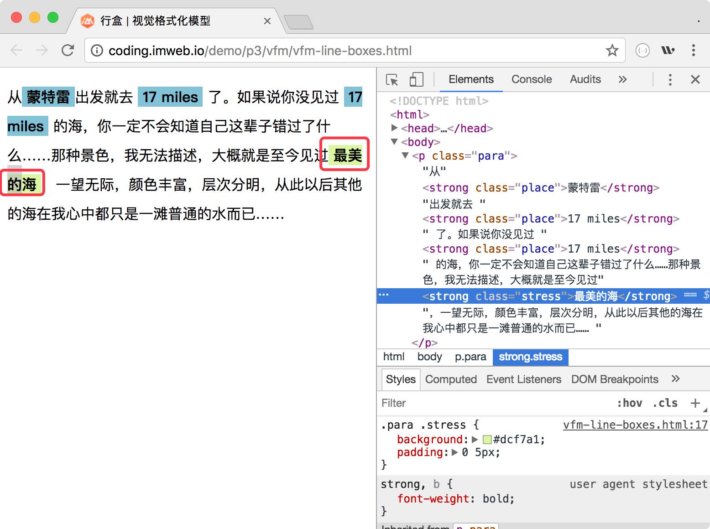
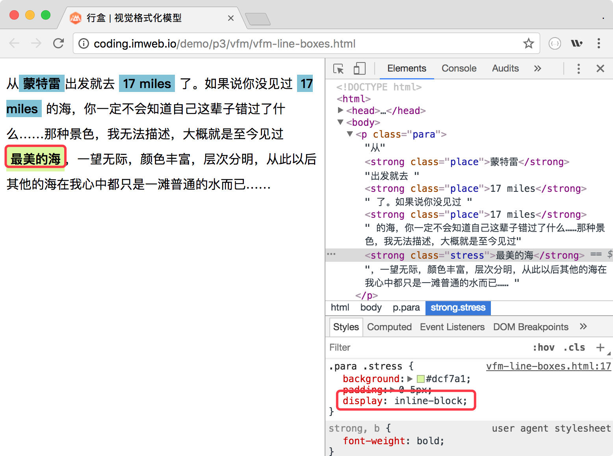

盒类型
盒的不同类型关键取决于 CSS 的属性 display 值，如 block 值的盒跟 inline 值的盒就是不一样的类型。而不同的盒又参与不同的格式化上下文，最终渲染出来效果就不一样了。如下图（block 值的盒为一整行，inline 值的盒为内容大小）：

块级盒与行内级盒（block-level boxex and inline-level boxex）
当元素的 CSS 属性 display 为 block, list-item, table, flex, grid 时，它就是块级元素（block-level elements），块级元素会生成块级盒（block-level boxes）。
同样当元素的 CSS 属性 display 为 inline, inline-block, inline-table, inline-flex, inline-grid 时，它就是行内级元素（inline-level elements），行内级元素生成行内级级盒（inline-level boxes）。
块容器盒（block container box）
所谓块容器盒，就是该元素的直接子元素只能是块级盒，或只能是行内级盒。其原文定义如下：
A block container box either contains only block-level boxes or establishes an inline formatting context and thus contains only inline-level boxes.
这样理解起来还是有点费力，不如来个图直接：

灰色表示父元素生成的盒子，三种颜色表示其直接子元素生成的盒子。左边的直接子元素全是块级盒，右边的子元素全是行内级盒，所以其父元素生成的盒子也叫块容器盒
块盒与行内盒（block boxes and inline boxes）
块盒（block boxes）由 display 值为 block 的元素生成，属于块级盒中的其中一种。
行内盒（inline boxes）由 display 值为 inline 的非替换元素（non-replaced element）生成，属于行内级盒中的一种。除了行内盒之外，其余的行内级盒都是原子行内级盒(atomic inline-level boxes)，它的典型特征就是作为一个整体，不能拆分换行。
下面我们以实例说明下行内盒与原子行内级盒的区别。
这里“最美的海”由于是行内盒（ display 值为 inline），所以如果一行显示不下的话，会折行显示，如下图：

但是如果我们将其 display 设置为 inline-block 时，它会成为原子行内级盒，然后我们发现整个“最美的海”都掉下去了，已经不能折行拆分了，如下图：

匿名盒
有时为了需要会添加补充性盒，这些盒称为匿名盒（anonymous boxes）, 它们没有名字，不能被 CSS 选择器选中。所以匿名盒不能为其设置样式，所有样式均来自继承（inherit）或初始值（initial）。
匿名块盒（Anonymous block boxes）
如下，我们有个 div 元素，里面有两个直接文本及一个 p 元素
<div class="block">
我是直接文本
<p class="block-p">我是块级元素，但是我的前后都不是</p>
我也是直接文本
</div>
这个时候就会为 p 元素上下的直接文本创建匿名块盒，大概如下（红色圈起来的我们可以理解为匿名块盒，它是不能被 CSS 选择器选中的）：

匿名行内盒（Anonymous inline boxes）
同样也有匿名行内盒，HTML 代码如下：
<p><span>课程名称：</span>前端工程师 NEXT 学位</p>
因为“前端工程师 NEXT 学位”没有元素包裹，属于直接文本，所以 CSS 引擎将会为其创建匿名行内盒。
行盒（line boxes）
注意行盒与行内盒是不一样的，简单来说，行盒是由行内格式化上下文(inline formatting context)产生的盒，用于表示一行。如下图，整个文本显示为5行，而每行都会有一个看不见的行盒在发挥作用。